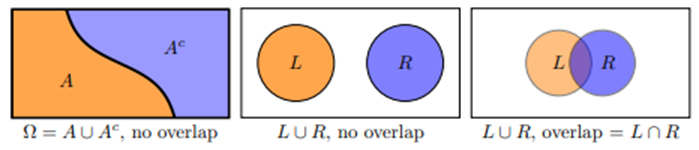
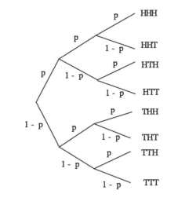

Week 4: Probability#
Probability models and axioms#
This week you’ll learn the basic concepts of probability.
Reminder#
Sample space#
List set of possible outcomes, \(\Omega\)
Describe beliefs about likelihood of outcomes
Probability axioms#
Important
Event: a subset of the sample space
Probability is assigned to events
Important
Axioms:
Non-negativity: \(P(A) \geq 0\)
Normalization: \(P(\Omega) = 1\)
(Finite) additivity: \(if \quad A \cap B = \emptyset , \quad then \quad P(A \cup B) = P(A) + P(B)\)
Important
Consequences of the axioms:
\(P(A) \leq 1\)
\(P(\emptyset) = 0\)
For disjoint events:
\(P(A \cup B) = P(A) + P(B)\)
\(P(A) + P(A^c) = 1\)
Inclusion-exclusion principle
\(P(A \cup B) = P(A) + P(B) - P(A \cap B)\)

Q7.
Suppose you toss a fair coin three times in a row. What is the probability of:
The probability distribution of the random variable X in a fair coin toss experiment follows a Bernoulli distribution. In a Bernoulli distribution, there are only two possible outcomes (success or failure), and it is characterized by a single parameter, p, which represents the probability of success (in this case, the probability of getting Heads).
In a Bernouli experiment involving a tossed coin;
P(H) = p and P(T) = 1-p where p is the probability of showing head
This experiment involves a fair coin and so P(H) = P(T) = 0.5
Three tosses of an unbaised coin

\(\Omega = \{HHH, HHT, HTH, HTT, THH, THT, TTH, TTT\}\)
Multiplication rule: P(THT) = (1-p)p(1-p)
Note
Mutually exclusive:
If events A and B are mutually exclusive, it means that they cannot happen simultaneously.
The probability of both mutually exclusive events occurring together is always zero, meaning that \(P(A \cap B) = 0\).
Note
Independent:
Refers to the concept that two or more events are not influenced by each other.
If events A and B are independent, it means that \(P(A \cap B) = P(A) \times P(B)\).
Q9.
Define P(A) as the probability of event A happening; P(B) the probability of event B happening; \(P(A \cap B)\) the probability of both A and B happening; \(P(A \cup B)\) the probability of either A or B happening; and P(A | B) the probability of A happening conditional on B already having happened.
QlO.
You are in a US quiz show. The host shows you three closed boxes in one of which there is a prize. The host knows which box the prize is in, you do not. You choose a box. The host then opens another box, not the one you chose, and shows that it is empty. He can always do this. You can either stick with the box you originally chose or change to the other unopened box. What should you do: stick or change? What is the probability that the prize is in the other unopened box?
Qll. (Optional).
Calculate the probability that two people in a group of size N will have the same birthday. What size group do you need for there to be a 50% chance that two people will have the same birthday?Ignore leap years.